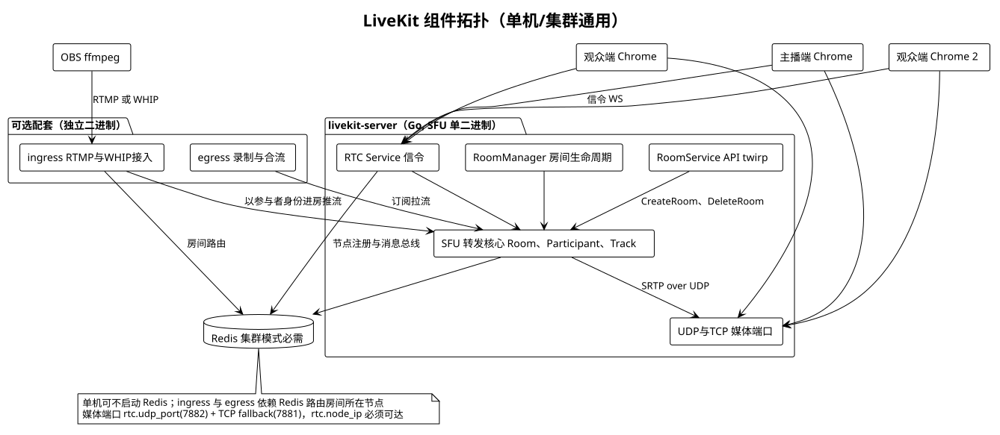
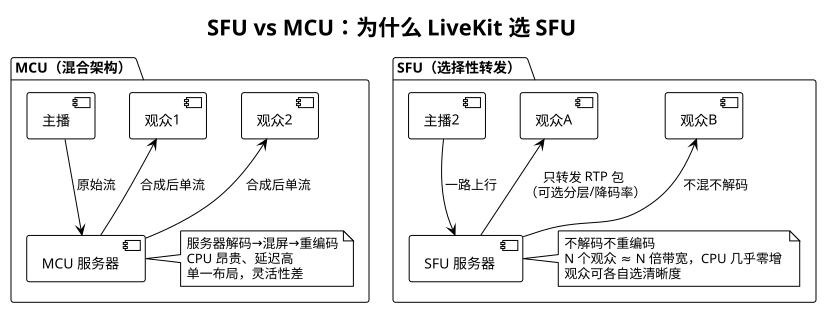
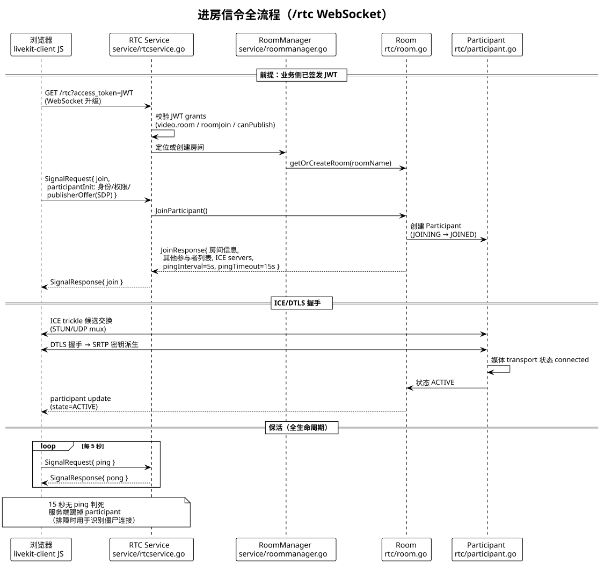
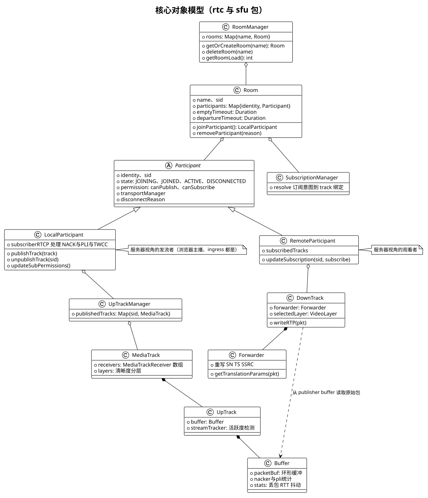
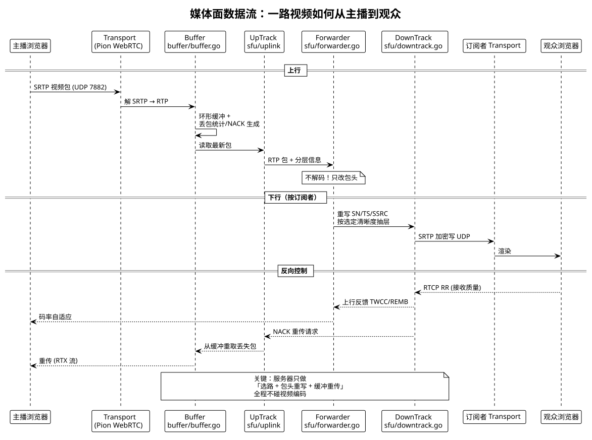
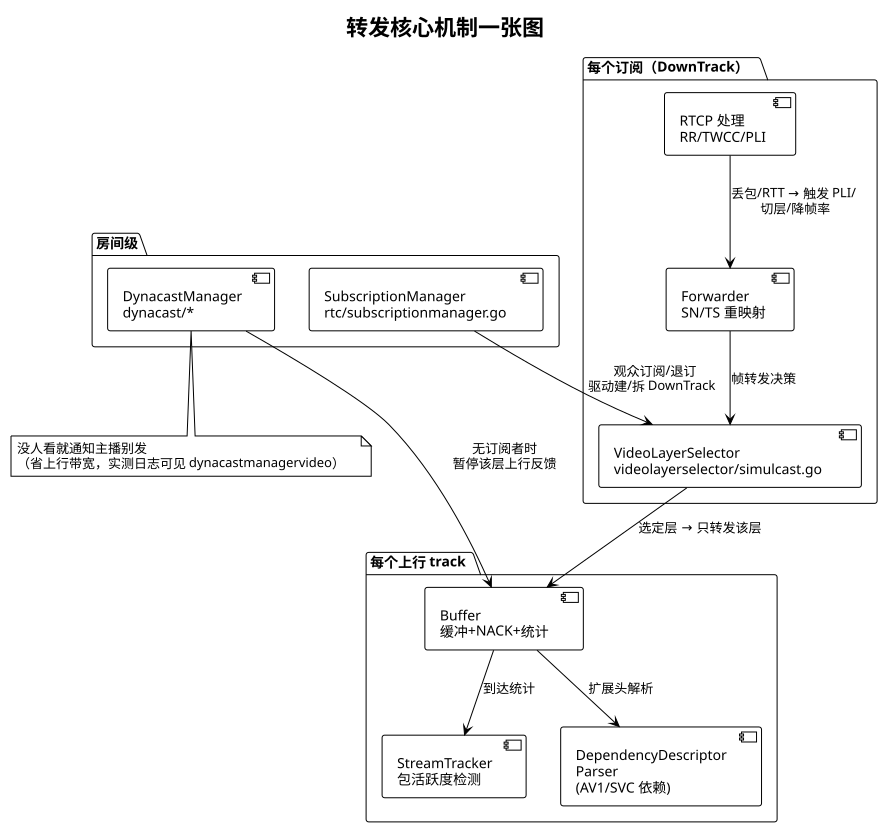
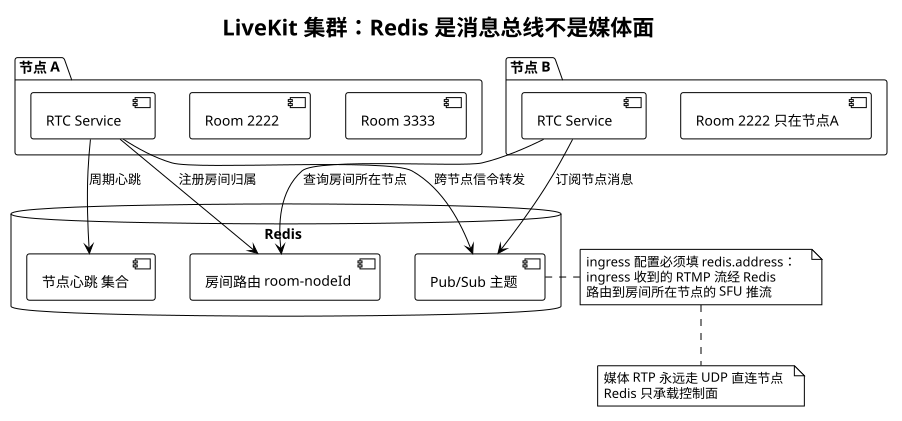
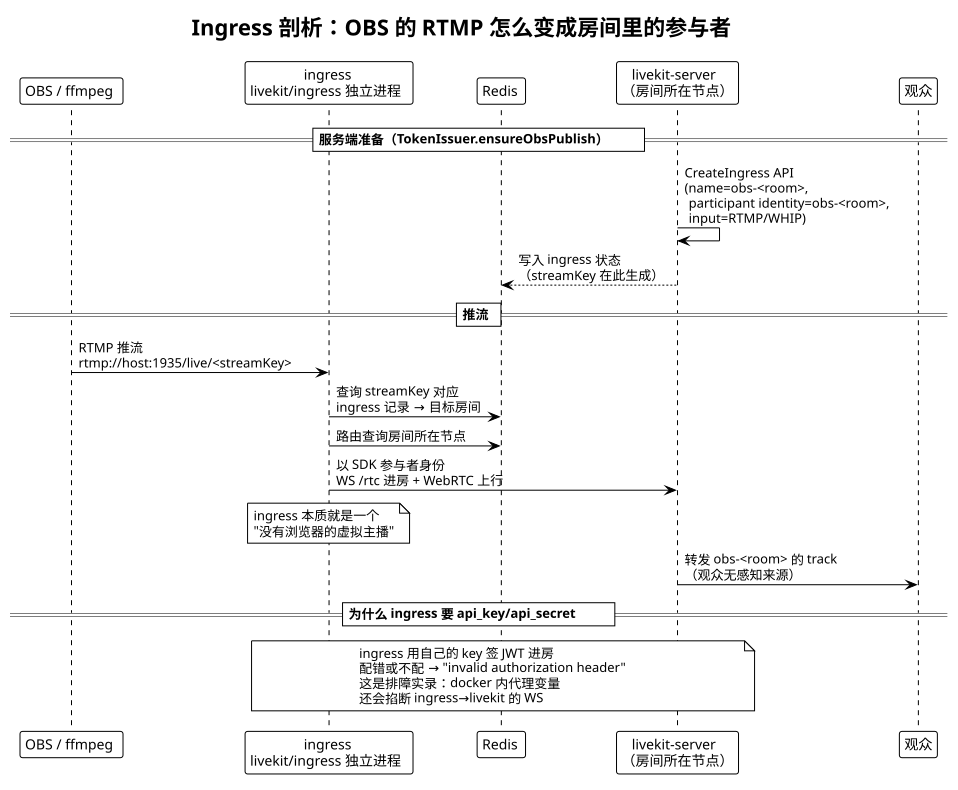
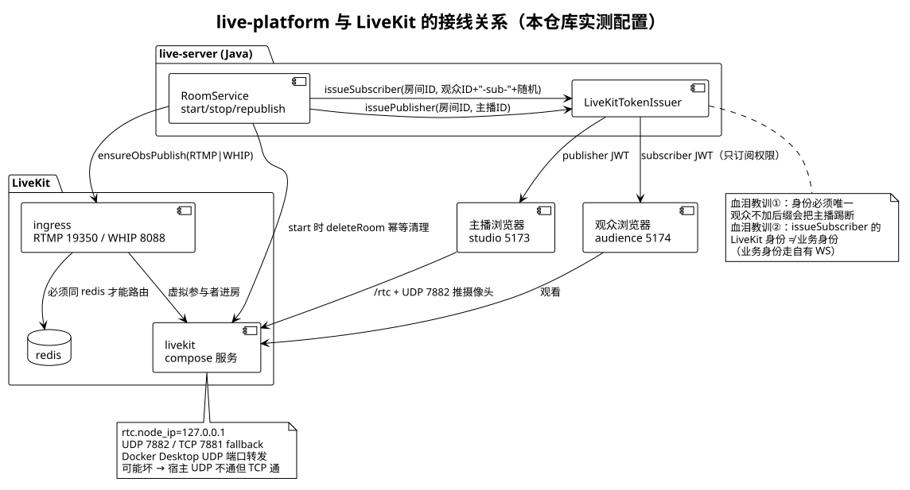

版本：v1 · 2026-11-09 · 基于本仓库实际部署的 LiveKit Server 1.13.11（protocol 18）
所有组件名、文件路径、参数值均来自本机运行实例的日志与配置原文，非泛泛而谈。
LiveKit 是一个用 Go 编写的开源实时音视频服务器，架构角色是 SFU（Selective Forwarding Unit，选择性转发单元）。全部媒体转发逻辑在一个二进制内完成（本仓库部署的 livekit-server 1.13.11）；RTMP/WHIP 接入（ingress）、录制合流（egress）是可插拔的独立进程。


一句话：SFU 只搬包，不拆包。主播一路视频流上行到服务器，服务器按订阅关系把 RTP 包原样（只改包头序列号）转发给每个观众。服务器不做解码、混屏、重编码，因此 CPU 成本几乎不随观众数增长，代价是带宽按观众数线性增长——这是纯转发架构的公平交易。
对照排障经验：obs_anchor 房间 1 主播 1 观众时，服务器 CPU 几乎不动，这符合 SFU 特征；如果换成 MCU，1 个观众就要开始吃转码资源。
| 面 | 协议 | 端口（本仓库） | 内容 |
|---|---|---|---|
| 信令面 | WebSocket（/rtc） | 7880 | join、发布、订阅、ping/pong、房间事件推送 |
| 媒体面 | UDP/DTLS/SRTP | 7882（UDP）、7881（TCP fallback） | RTP 音视频包本身 |
| 管理面 | HTTP twirp | 7880 | RoomService：CreateRoom/DeleteRoom/ListParticipants，给业务服务器用 |
记住这个三分法，后面所有排障都是先定位"死在哪个面"。
客户端与 LiveKit 之间只有一条 WebSocket（/rtc），上面跑 protobuf 定义的 SignalRequest/SignalResponse。服务端入口代码 service/rtcservice.go（本机日志中出现 3600+ 次，是最热的文件）。

要点：
/rtc?access_token=JWT。grants 决定权限（roomJoin、canPublish、canSubscribe）。业务服务器（我们的 live-server）通过 LiveKit SDK 用 apiKey/apiSecret 签 JWT。pingInterval: 5, pingTimeout: 15——客户端每 5 秒 ping，15 秒无 ping 服务端判死踢人。这是识别"僵尸连接"的判据（第 8 章复盘会用到）。每次 participant 离开都带原因码（rtc/participant.go 的 disconnectReason 字段），排障时先查它：
| 原因 | 含义 | 我们平台对应场景 |
|---|---|---|
| CLIENT_INITIATED | 客户端主动 leave | 正常下播、重新推流先断旧连接 |
| DUPLICATE_IDENTITY | 同身份新连接进房，旧连接被踢 | 观众与主播同账号（第 8 章复盘②）；重推流不断旧 Room（复盘①） |
| SERVER_SHUTDOWN | 服务端重启 | docker 重启 livekit 容器 |
| PARTICIPANT_REMOVED | 管理 API 踢人 | DeleteRoom 连带全员离开 |
| ROOM_DELETED | 房间被删 | 我们的 start 接口幂等清理残留房间 |
| STATE_MISMATCH | 重连状态不一致 | 弱网重连竞态 |
| TIMEOUT / SIGNAL_CLOSE | 保活超时 / 信令 WS 断开 | 网络中断、代理掐 WS |
对象模型决定你能读懂日志。以下类图全部来自 rtc/sfu 包的真实结构（类名与日志中的文件名一一对应）：

RoomManager ──rooms──> Room ──participants──> Participant(Local/Remote)
Room ──subscriptionManager──> SubscriptionManager
LocalParticipant ──upTrackManager──> UpTrackManager ──> MediaTrack ──> UpTrack ──buffer──> Buffer
RemoteParticipant ──> DownTrack ──forwarder──> ForwarderLocalParticipant = 发流的人，RemoteParticipant = 收流的人。注意这是服务器视角：不管对方是 Chrome 里的主播、还是 ingress 虚拟推流器，只要它往房间里发 track，在服务器里就是 LocalParticipant。我们第 7 章会看到 ingress 正是利用这一点"伪装"成主播。
JOINING → JOINED → ACTIVE → DISCONNECTED。本机日志原文（rtc/participant.go:2329 "updating participant state"）：
state: JOININGACTIVE（日志级别 INFO，rtc/room.go:1284 "participant active"）DISCONNECTED，携带 disconnectReason排障技巧：在 livekit 日志里 grep "updating participant state" + 房间名，就能看到每个参与者的完整生命周期。
每个 Participant 持有两条 Pion WebRTC PeerConnection（rtc/transport.go，本机日志 1200+ 次）：
看日志时 "transport": "PUBLISHER" / "SUBSCRIBER" 标注了每条 ICE 状态变化属于哪条连接。
# live-deployment/livekit.yaml
port: 7880 # 信令 + 管理 HTTP
rtc:
tcp_port: 7881 # 媒体 TCP fallback
udp_port: 7882 # 媒体主通道 UDP
node_ip: 127.0.0.1 # 通告给客户端的服务器地址ICE 候选由服务器下发（含 stun:global.stun.twilio.com 等公网 STUN，本机日志原文）。libwebrtc 会优先尝试 UDP，失败自动回退 TCP 7881——排障实录：本机 Docker Desktop 的 UDP 端口转发坏掉时，宿主机 UDP 7882 不通但 TCP 7881 通，浏览器推流不受影响，而纯 UDP 的 ffmpeg WHIP 就推不动。
DTLS 握手（指纹在 SDP fingerprint:sha-256 里可见）→ 密钥派生 → SRTP 加解密。全程发生在 transport 层，对上层转发完全透明。

上行的关键在 buffer/buffer.go：每个上行 track 一个环形包缓冲，做三件事：
sfu/forwarder.go 是每个下行订阅独立持有的。它不解码视频，只做序列号/时间戳/SSRC 重映射（不同观众丢包历史不同，SN 空间必须独立）。这是 SFU 与"IP 组播"的本质区别：每个观众是一条独立的 RTP 会话。

videolayerselector/simulcast.go）：Chrome 摄像头默认发三档清晰度，服务器按观众窗口大小/带宽选一层转发，切层无需重新协商。dynacast/dynacastmanagervideo.go，本机日志 90+ 次）：房间里没人看某路流时，服务器通知发布端暂停发送该层——直接省主播上行带宽。buffer/dependencydescriptorparser.go）：AV1/SVC 可伸缩编码的帧依赖关系解析，比 simulcast 更细粒度。
单机部署不需要 Redis（本仓库仍配了，因为 ingress 需要）。集群模式下 Redis 承担三件事：
铁律：Redis 只承载控制面，媒体 RTP 永远 UDP 直连节点本身。集群加 Redis 不会成为媒体瓶颈。
给业务服务器用的管理 API 是 service/twirp.go 暴露的 RoomService（CreateRoom/DeleteRoom/ListParticipants/ListRooms），走 HTTP + JWT，我们 live-server 的 LiveKitTokenIssuer 就是它的 Java 客户端封装。
ingress 是一个独立进程（livekit/ingress），职责一句话：把 RTMP/WHIP 流转成"一个虚拟主播"。本仓库 compose 中映射 RTMP 19350:1935、WHIP 8088:8088（宿主 1935 被占）。

| 配置 | 少了会怎样 | 当时的报错原文 |
|---|---|---|
redis.address | ingress 找不到房间所在节点 | ingress 日志 ws 连不上 / 房间路由失败 |
api_key/api_secret | 虚拟参与者进房鉴权失败 | invalid authorization header. Must start with Bearer；裸调 CreateIngress 得 invalid ingress: no participant identity |
| compose 清空代理 env | ingress 容器内经代理的 WS 被掐 | ingress 日志显示 ws 连不上 livekit（Docker 自动注入 HTTP_PROXY 所致） |
CreateIngress 时生成 streamKey，OBS 的推流地址 = rtmp://host:1935/live/<streamKey>。ingress 收到 RTMP 后用 streamKey 反查 ingress 记录 → 目标房间 → Redis 路由 → 进房推流。streamKey 即凭据，下播换 key 即轮换凭据——这就是为什么我们控制台把服务器/密钥显示为只读框。
RTMP 与 WHIP 各建一个 ingress（命名 obs-<room> / obs-<room>-whip），幂等复用，已在 LiveKitTokenIssuer.ensureObsPublish 实现。

我们平台与 LiveKit 的全部接触面只有三个：签发 token（Java SDK）、管理房间（twirp API）、OBS 入口（ensureObsPublish）。业务身份（评论/点赞/关注）完全走自有 WebSocket，与 LiveKit 身份无关——记住这个边界，下面的复盘②才不会犯。
| 项 | 内容 |
|---|---|
| 现象 | 点「重新推流」后观众黑屏，页面报"推流连接已断开" |
| LiveKit 日志证据 | 同身份第二个连接 join（Reconnect:false）→ 旧 participant closing |
| 根因 | 前端建了新 Room 但没先断旧 Room：LiveKit 同身份互踢踢掉正在推流的旧连接；旧 Room 还占着摄像头，新连接取流失败 |
| 修复 | connectAndPublish 第一步 lkRoomRef.current.disconnect()（commit 4e24d0b） |
| 项 | 内容 |
|---|---|
| 现象 | "观看一刷页面，主播端就黑屏"；服务器侧主播 participant 状态 ACTIVE 但 tracks 为空 |
| 排查路径 | 画布流对照实验排除媒体链路 → livekit 日志发现同身份互踢 → 意识到测试用同一账号既当主播又当观众 |
| 根因 | 观众 token 直接用用户 ID 当 LiveKit 身份，与主播身份相同 → 观众每次进房都把主播踢下线 |
| 修复 | issueSubscriber 身份改为 用户ID-sub-随机8位（commit 88a01ea）。LiveKit 身份只是媒体面标识，业务身份走自有 WS，互不影响 |
| 项 | 内容 |
|---|---|
| 现象 | ffmpeg WHIP（纯 UDP）推流失败，但浏览器 WebRTC 正常 |
| 证据 | 宿主 UDP 7882 不可达，容器网内 UDP 正常；ICE 日志显示 libwebrtc 回退 TCP 7881 |
| 结论 | Docker Desktop UDP 端口转发坏（macOS 已知问题）。浏览器无感（TCP fallback），原生 UDP 客户端会踩坑 |
信令问题 → docker compose logs livekit | grep rtcservice
看 "join request validated" / "signal stream closed"
媒体问题 → grep "ice connection state change"（UDP 不通看有没有走 tcp fallback）
谁踢了谁 → grep "participant closing" 看 reason 字段
僵尸连接 → grep "updating participant state" 看状态与 ping 中断点
ingress → grep -i ingress 容器日志 + redis.address/api_key 三连检查文档版本 v1 · 基于 LiveKit Server 1.13.11 实测 · 配套 UML 源文件：docs/uml/lk-*.puml